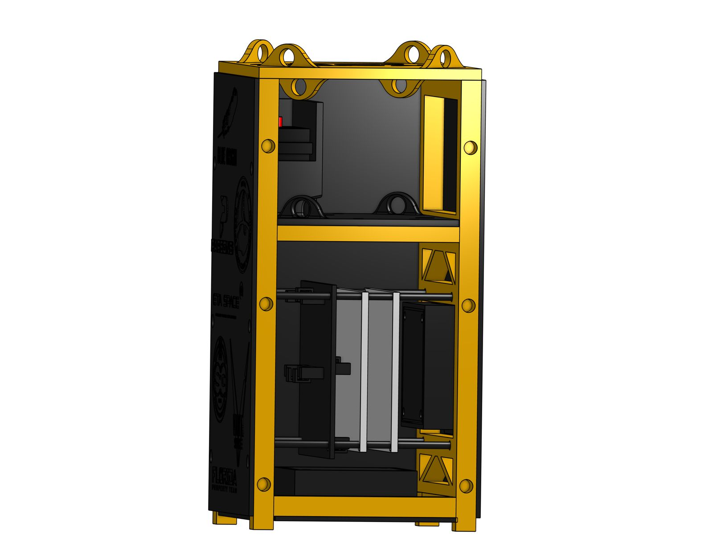
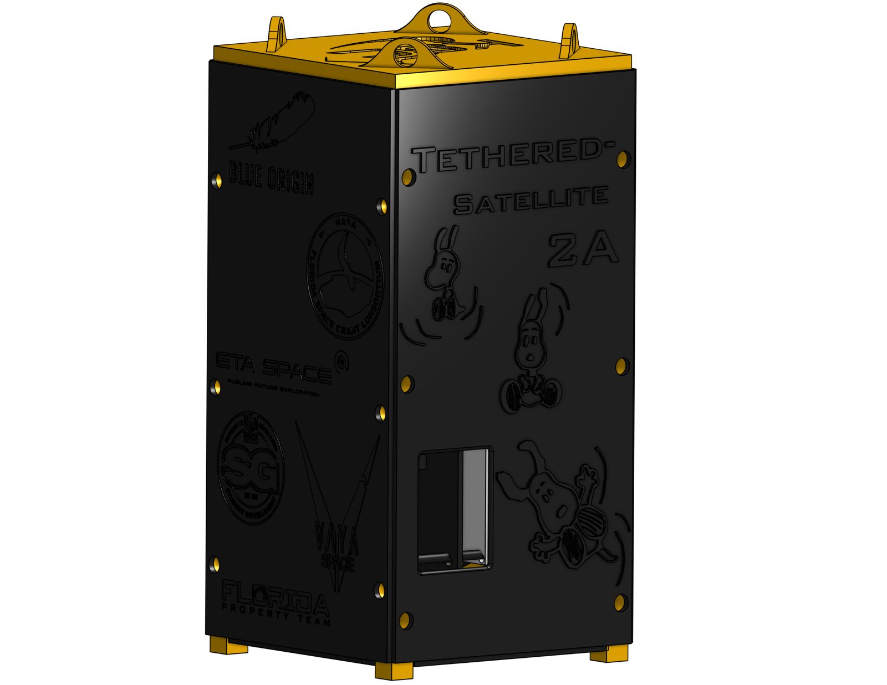
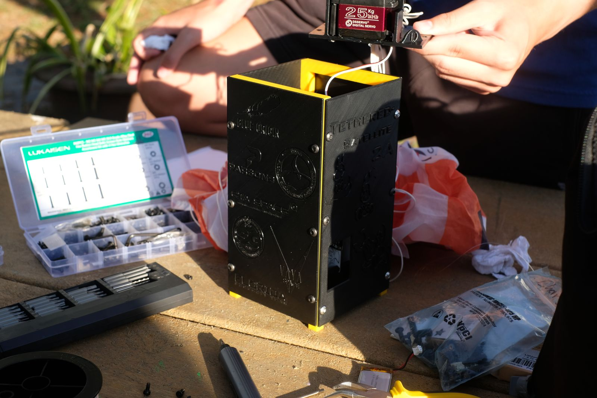
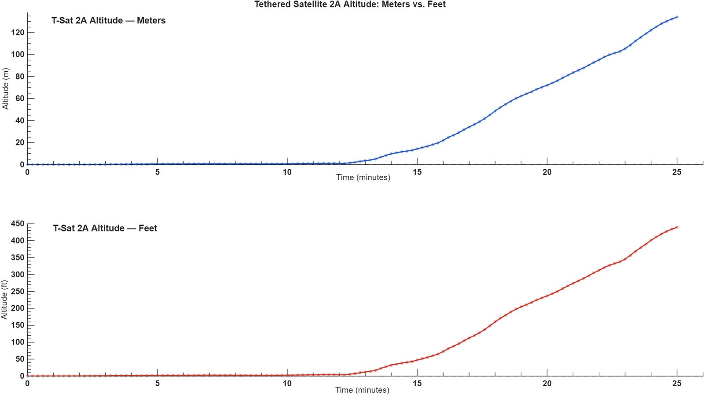
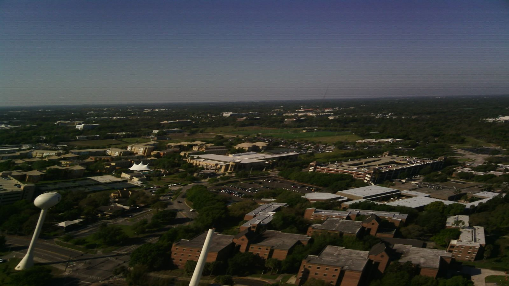
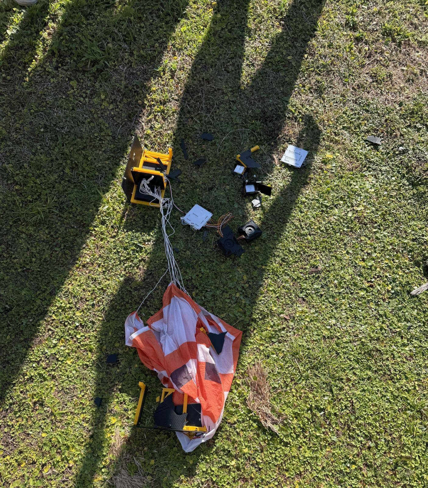
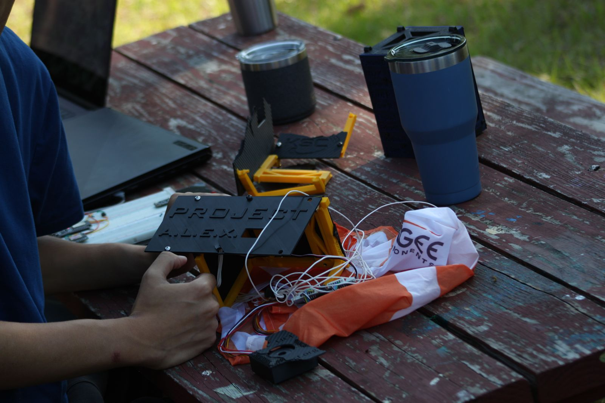

Project 01 · Knights Satellite Club
TSat-2A
Mechanical development of a 2U tethered-satellite demonstrator, and what its 450-ft flight showed about the parachute release.
- Role
- Mechanical Team Lead
- Dates
- Aug 2025 – Mar 2026
- Team
- 5-member mechanical team
- Status
- Flown Mar 28, 2026

My role
I led a five-member mechanical team on TSat-2A. I designed the enclosure walls, the servo mounting board the release line ties into, and the mechanical PCB mounting. I also carried out the integration and assembly of every part. I supervised the camera mounts, the panel and top-panel system, and the deployment-line tensioning.
Alongside the hardware, I kept the mechanical requirements and the mass, volume and component budgets, and maintained CAD configuration control in Onshape.


Choosing the parachute release
The payload had to hold its parachute securely on the way up and then release it on command. We chose a servo-driven cutter that cuts a fishing line holding the parachute compartment closed.
| Option | Outcome |
|---|---|
| Servo-driven fishing-line cutter | Selected for low cost, materials we already had, lower weight, our schedule, and easier testing. |
| Burnwire release | Considered, not pursued. |
| Servo latch / hinge | Considered, not pursued. |
The housing was 3D-printed in PETG as two repeatable sections. The PCBs sat on heated inserts and standoffs so they could be removed and repositioned during integration.
Integration and testing
I was responsible for checking that the line cut cleanly, that it held at the right tension so it wouldn't release early, and that the parachute came out correctly. Before flight, the team ran:
| Test | What we learned |
|---|---|
| Four-point retention test | The connection held beyond the range of our force gauge. |
| Dummy-housing drops from about 50 ft | The parachute extracted. This was a limited-height check, not the full flight setup. |
| 20-minute integrated electronics and servo test | No data corruption, but the line did not cut. |
| Integrated PCB-in-housing dry run | Checked physical fit and communication with everything installed. |
A servo-panel floor cracked before launch, so we reinforced the bolt holes with epoxy and replaced the servo panel.
Flight and failure
TSat-2A flew on March 28, 2026, reaching about 450 ft on its tether. The first cut command was acknowledged but didn't cut the line. Separation happened later, but the parachute did not deploy.
We reviewed the flight video and worked through the possible failure modes. Part of the parachute came out while the rest stayed trapped, which pointed to the servo compartment. The cause was the parachute catching on a piece of 3D-printing support material left in the part.
The housing was badly damaged, but the onboard images and altitude data were recovered from the SD card. There was no second launch and no redesign.




Lesson
Final-assembly checks have to cover the whole packed deployment path, including leftover print supports and anything the parachute could catch on, not just whether the mechanism actuates.
Photos and CAD: Knights Satellite Club team, used with permission.